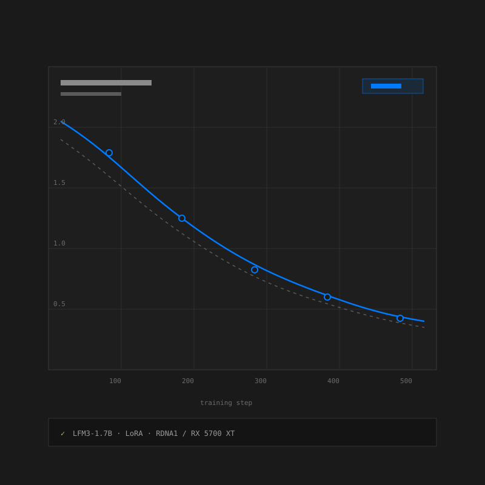
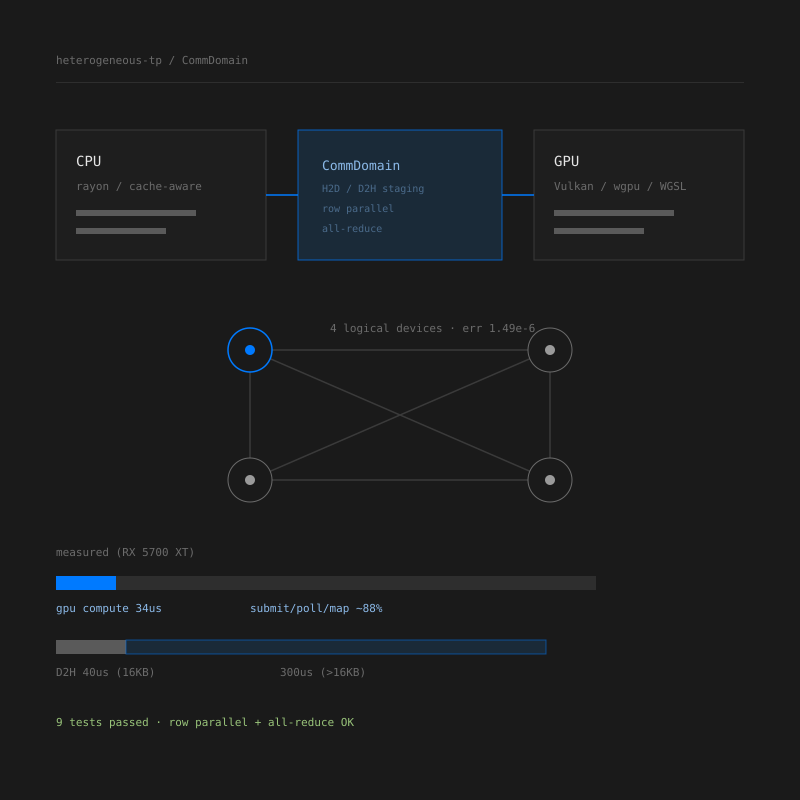
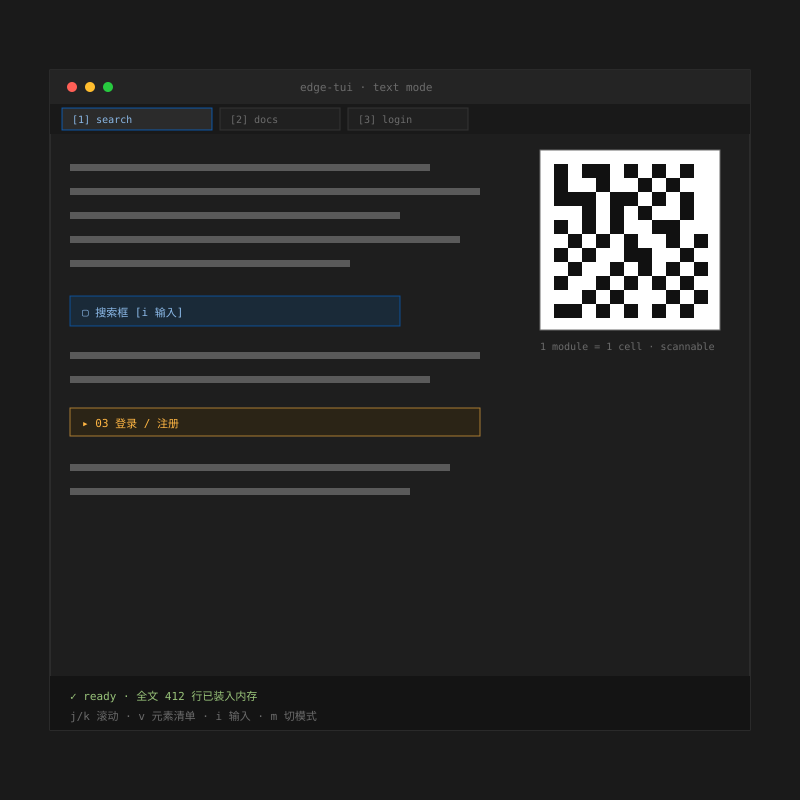
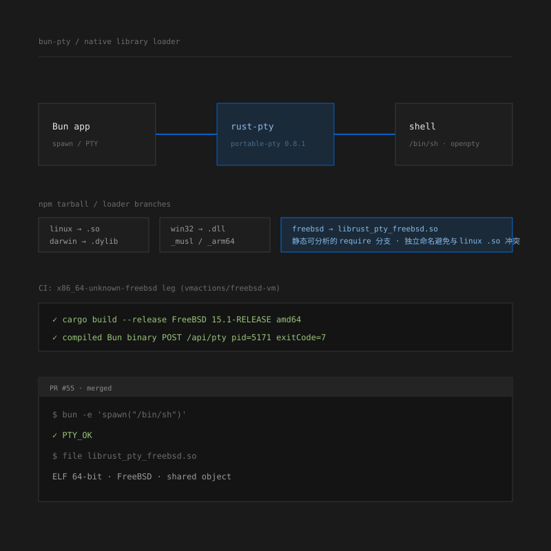
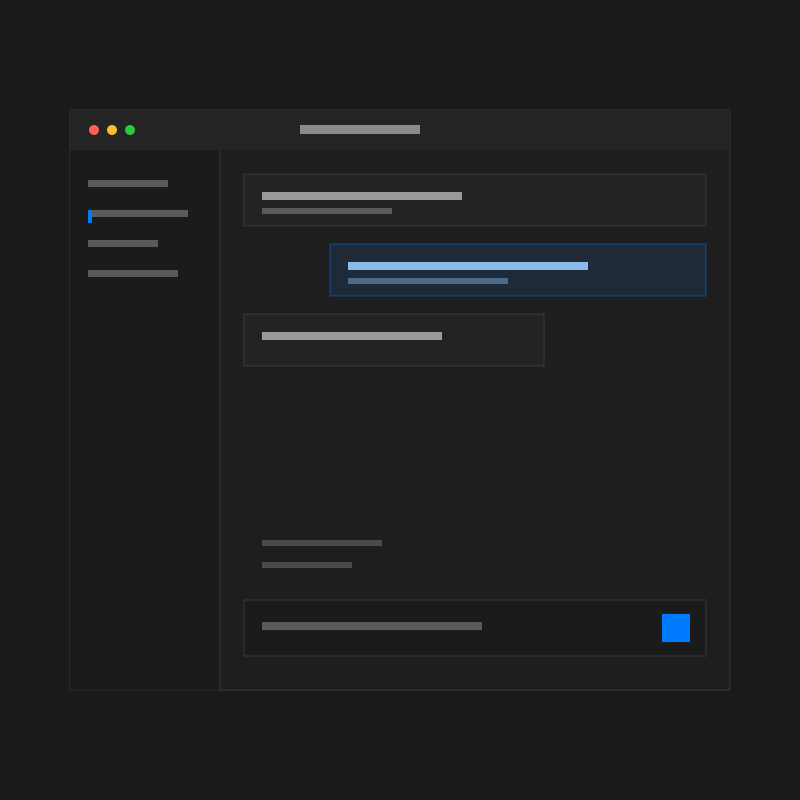

大模型应用与微调
把通用模型调成懂业务的专用工具。
十年工程造价与工程数据经验，如今专注把 AI 真正接进业务现场——大模型微调、Agent 工作流、RAG 知识库，以及能跑在生产里的工具链。
// 价值不在演示，在真实场景里跑得通、算得准、可验证。
从模型到应用，把智能做成可交付的工程。
把通用模型调成懂业务的专用工具。
让智能体有边界、有记忆、能交付。
让行业经验可被检索、可被复用。
从实验到可运行的产品闭环。
来自 GitHub 的真实仓库与上游贡献，均可点开核对。

给官方 cookbook 补两篇实测：#153 定位 AMD RDNA1 上 fp16 LoRA 出 NaN 的根因，给出 QLoRA NF4 可用配置（峰值 1.42 GiB）；#154 把 LFM3-1.7B 微调成输出 tool_call 的 Agent 决策模块，4000 样本训练 loss 1.609→0.078、token accuracy 0.735→0.975（两篇审查中）。
// 评价主流教程都默认 NVIDIA，这里补的是同一张 RX 5700 XT 上量出来的空白——"老卡能不能训"和"Agent 该输出什么格式"，都不是照抄能得来的结论。

用 Rust + wgpu 从零搭跨 CPU / GPU 的统一通信域，跑通行并行 + all-reduce（4 逻辑设备误差 1.49e-6，9 个回归测试全绿）。记录 4 个反直觉实测：GPU 计算仅 34µs 但 88% 时间花在 submit/poll/map；wgpu 16KB staging 阈值让 D2H 从 40µs 跳到 300µs；rayon 直接按行并行比单线程还慢；map_async 有 1.7ms 异常延迟。
// 评价没把它包装成性能突破——端到端更慢、多卡是单卡模拟，都写在显眼处。先量再判、把反例留下来，比一个漂亮数字更值钱。

用 CDP 驱动 headless Edge，把 DOM 文字按原样排进终端、图片降成字符画；二维码走原始模块矩阵 1:1 映射，手机真扫得出。做齐多标签页、元素清单、折叠展开、自愈式输入与持久登录态，每个坑都有复现脚本：滚动 903ms→0ms，卡死页 25s+12s→767ms。
// 评价"文字走 DOM、图片走像素"这次架构修正，把字符画方案里正文糊成一团的问题一次性解决。协议细节（SGR 鼠标、Enter 必须带 text:"\r"、布局坐标 vs 视口坐标）全是真站点上才踩得到的。

Rust PTY 在 FreeBSD 上本来就能编译，但包里没有产物、loader 又分不清两个 .so。补上独立命名（librust_pty_freebsd.so）、静态可分析的 require 分支和 FreeBSD VM 的 CI leg；实测 FreeBSD 15.1 上编译通过，编译进 Bun 二进制后能开会话、退出码正确（PR #55，已合并）。
// 评价改动只有 56 行，解决的是"同一份 npm 包里两个平台的 .so 同名互相覆盖"——只有真维护跨平台包才会撞上。和首页那台 P3 终端是同一条 PTY 脉络。

给 OpenMouse 补一只鼠标的完整驱动：逆向 0xFF00 输出通道的协议帧，实现 DPI 五档读写、灯光与提交帧，所有写入走"读—改—写—回读确认"周期（PR #227，已合并）。
// 评价2503 个测试 0 失败，并把"首次写入不得覆盖真实 DPI 表"写成测试约束。这是少数真正合并进上游、且经住多轮 AI 审查的硬件贡献。

自己的主力仓库：zip / 7z / rar / tar 家族统一读写，安全解压优先，含文件名编码打分判定、分卷缺卷检测、checksum / verify 子命令，桌面 GUI 与 CLI 双端（已迭代 30+ PR）。
// 评价从格式解析到桌面交互的完整闭环。持续维护 30 多个 PR 的过程，比功能清单更能说明工程耐心。
领域经验与 AI 能力的交叉点。
给访客的一份近况快照 · 最后更新 2026-11。
把工程造价的老本行，和 AI 应用开发的新工具，接到同一条数据链上。
目前重心在三件事：给上游补 AI 时代的实测空白（AMD 老卡微调、Agent 的 tool-call SFT、FreeBSD 上的 PTY）；做自己的 Rust / 终端工具（异构张量并行 PoC、P3、THzip）；把造价行业那些"打不开的标书、算不清的组价"继续做成可校验的工具。
换成 OpenCode 风格，右侧是 P3 琥珀 CRT 终端的动态复刻——点它可跳到我的 P3 项目。
#153 解决 AMD 老卡 fp16 NaN，#154 把模型训成会输出 tool_call 的决策模块。
给 Rust PTY 补独立 .so 命名、loader 分支与 VM CI leg，74 stars 的上游项目。
Rust + wgpu 跑通 CPU/Vulkan 通信域与 all-reduce，留下 4 个反直觉实测结论。
造价工程师出身，十年专注工程数字化；近两年把重心转向 AI 应用开发。
习惯先摸清口径与数据，再写成可重复验证的工具。过去是把现场变成清楚的数字，现在是把大模型、Agent 和自动化工具接进这些数字里——让靠人经验判断的事情，变成可计算、可验证的系统。
不迷信默认参数，也不迷信第一版结论。
有 AI 应用、工程数据工具或开源协作的想法，来 GitHub 或邮箱找我。通常 1–2 个工作日内回复。
github.com/Kissshot-2003 ↗ 邮箱 Karl20070509@live.cn